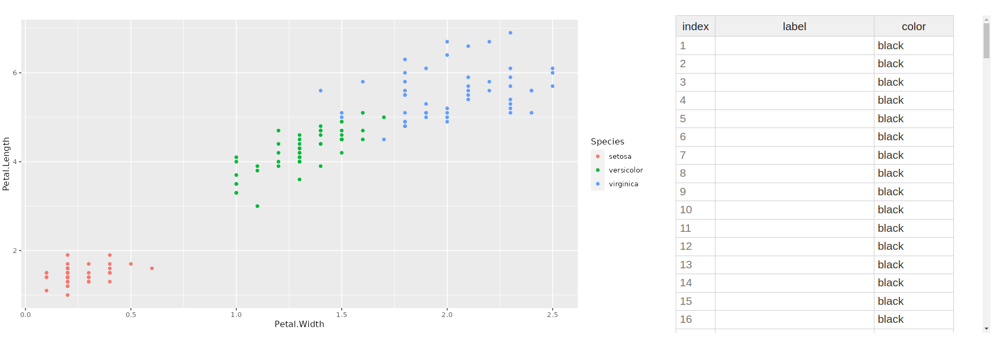

Labelling the points of a 'ggplot' with Shiny
Posted on August 8, 2022
by Stéphane Laurent
The Shiny app below allows to attribute a label to the points of a ‘ggplot’ by double-clicking on the points.
library(shiny)
library(rhandsontable)
library(htmlwidgets)
library(colourpicker)
library(ggplot2)
library(ggrepel)
#' Add labels to points on a ggplot2 scatterplot
#' @param gg the ggplot
#' @param X name of the x-variable
#' @param Y names of the y-variable
#' @param labels named list like \code{list("10" = c("mylabel", "blue"))};
#' the names of the list are the row names, each component of the list is
#' a character vector of length two: the label and its color
#' @importFrom ggrepel geom_text_repel
addLabels <- function(gg, X, Y, labels){
if(is.null(labels)){
return(gg)
}
dat <- gg$data
indices <- intersect(names(labels), rownames(dat))
dat[["..labels"]] <- ""
dat[["..colors"]] <- "black"
dat[indices, "..labels"] <- sapply(labels[indices], "[[", 1L)
dat[indices, "..colors"] <- sapply(labels[indices], "[[", 2L)
range_x <- diff(range(dat[[X]], na.rm = TRUE))
range_y <- diff(range(dat[[Y]], na.rm = TRUE))
gg + geom_text_repel(
aes_(x = as.name(X), y = as.name(Y), label = as.name("..labels")),
color = dat[["..colors"]], size = 9, max.overlaps = 100L,
data = dat, inherit.aes = FALSE,
segment.size = 0.2, min.segment.length = unit(0, 'lines'),
nudge_x = range_x/15, nudge_y = range_y/15
)
}
ui <- fluidPage(
br(),
fluidRow(
column(
8,
plotOutput("ggplot", dblclick = "plotClick")
),
column(
4,
tags$div(
style = "max-height: 400px; overflow: auto;",
rHandsontableOutput("hot_pointLabels")
)
)
)
)
server <- function(input, output, session){
Ggplot <- reactive({
gg <- ggplot(iris) +
geom_point(aes(x = Petal.Width, y = Petal.Length, color = Species))
gg
})
output[["ggplot"]] <- renderPlot({
addLabels(Ggplot(), "Petal.Width", "Petal.Length", Labels())
})
output[["hot_pointLabels"]] <- renderRHandsontable({
if(!is.null(hot <- input[["hot_pointLabels"]])){
DF <- hot_to_r(hot)
} else {
DF <- data.frame(
index = rownames(iris),
label = "",
color = "black",
stringsAsFactors = FALSE
)
}
rhandsontable(DF, rowHeaders = NULL) %>%
hot_col("index", readOnly = TRUE) %>%
hot_cols(colWidths = c(50, 200, 100)) %>%
hot_table(
highlightRow = TRUE, contextMenu = FALSE, fillHandle = TRUE
) %>%
onRender(
"function(el, x){
var hot = this.hot;
Shiny.addCustomMessageHandler('handler_hot', function(msg){
hot.setDataAtCell(msg.row, 1, msg.label);
hot.setDataAtCell(msg.row, 2, msg.color);
});
}"
)
})
Index <- reactiveVal()
observeEvent(input[["plotClick"]], {
dat <- droplevels(Ggplot()$data)
point <- nearPoints(
dat, input[["plotClick"]], threshold = 15, maxpoints = 1L
)
if(nrow(point)){
Index(as.integer(rownames(point)))
showModal(modalDialog(
title = "Set a label for this point and its color",
textInput("pointLabel", NULL, placeholder = "label"),
colourInput("pointLabelCol", NULL, value = "black"),
footer = tagList(
modalButton("Cancel"),
actionButton("ok", "OK")
),
size = "s"
))
}
})
observeEvent(input[["ok"]], {
session$sendCustomMessage(
"handler_hot",
list(
"row" = Index() - 1L,
"label" = input[["pointLabel"]],
"color" = input[["pointLabelCol"]]
)
)
Index(NULL)
removeModal()
})
pointsLabelsTable <- reactive({
if(!is.null(hot <- input[["hot_pointsLabels"]])){
hot_to_r(hot)
}else{
NULL
}
})
Labels <- eventReactive(input[["hot_pointLabels"]], {
dat <- hot_to_r(input[["hot_pointLabels"]])
indices <- dat[["index"]]
labels <- dat[["label"]]
colors <- dat[["color"]]
keep <- labels != ""
if(any(keep)){
L <- mapply(
c, labels[keep], colors[keep],
SIMPLIFY = FALSE, USE.NAMES = FALSE
)
setNames(L, indices[keep])
}else{
NULL
}
})
}
shinyApp(ui, server)